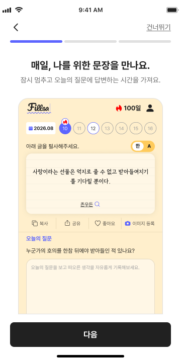
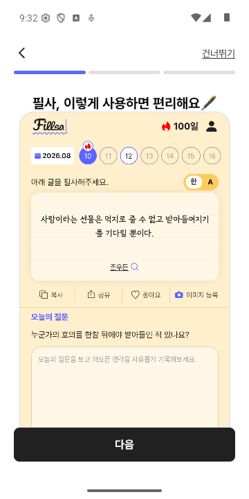
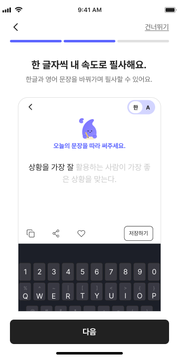
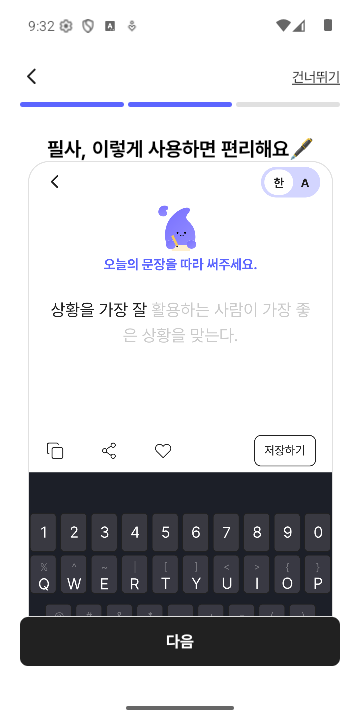
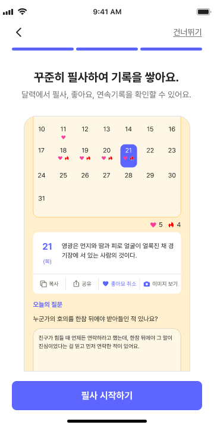

All images are uncropped 360 × 720 frames. Runtime screenshots use Android system chrome, so only the requested white root/status/gesture surface is directly comparable; the QA record lists the remaining out-of-scope content differences.




